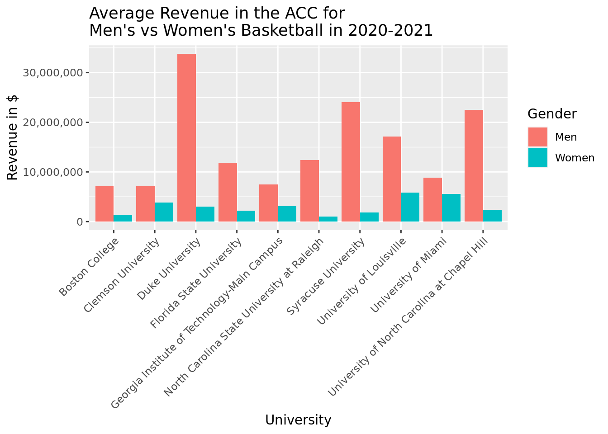
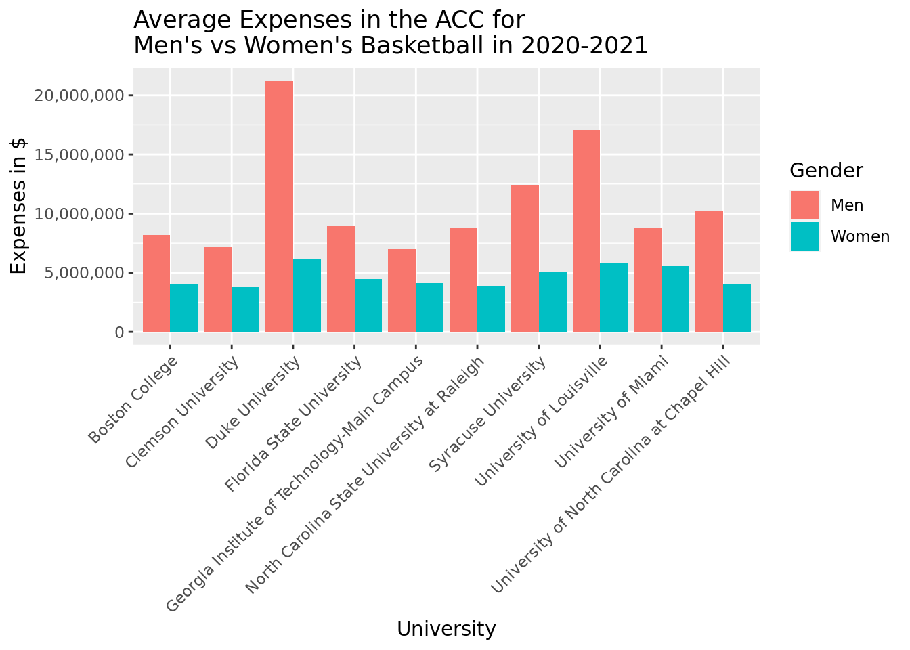
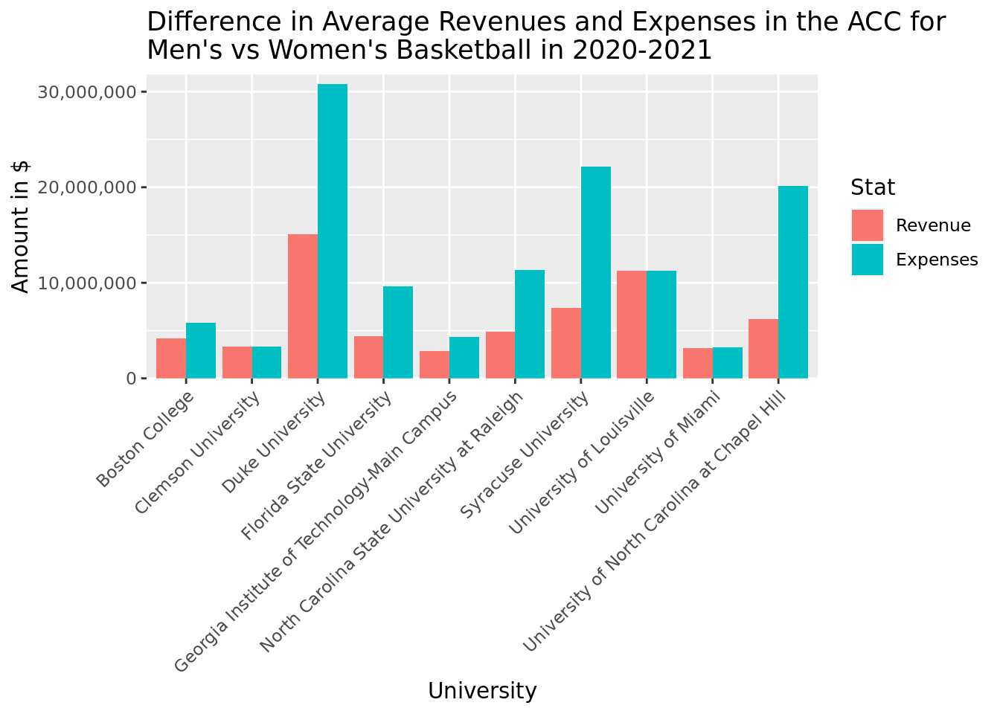

It is well known that D1 sports programs generate a lot of revenue for universities. Whether it be through brand deals, alumni donations, or some other form of income, college sports tend to be profitable. However, there are discrepancies between sports programs based on gender. Our research question is:
How do men’s college basketball revenues and expenses compare to women’s college basketball revenues and expenses?
While women’s sports do receive significant funding at colleges, the investment into women’s sports is often a lot less than that of many male programs at the same schools. The NCAA’s investments into a myriad of college sports programs shows a stark contrast in both investment and revenue between male and female athletics programs. We decided to analyze and visualize this discrepancy using data from the Equity in Athletics Data Analysis (EADA). Since there are mandatory reports from post-secondary institutions that receive Title IX funding, we were able to analyze the differences in expenses (how much money was spent on an athletic program) and revenue (how much money a program brought in). Clearly, different sports and schools will have significant differences in costs and revenue depending on variables not quantified in this report. With that in mind, we focused on data from a single sport, basketball, for consistency. Our hypothesis is that a general trend between schools in the Atlantic Coast Conference will show a significant imbalance in revenue and expenses between men and women’s basketball programs. Data collection occurred between 2020 and 2021, and the data set consists of variables such as the number of male and female athletes, the number of male and female coaches and their salaries, as well as the total revenue and expenses of male and female basketball teams. There are no ethical concerns we foresee arising in our analysis due to the mandatory reporting necessary for schools with Title IX funding.
Diaz, J. (2021, October 27). The NCAA’s focus on profits means far more gets spent on men’s Championships. NPR. https://www.npr.org/2021/10/27/1049530975/ncaa-spends-more-on-mens-sports-report-reveals
Jope, C. (2022, November 9). NCAA Men’s VS Women’s Basketball: Revenue, viewership, attendance. World Sports Network.https://www.wsn.com/ncaam-basketball/ncaa-men-vs-women-basketball/
Methodology
In answering our research question of “How do men’s college basketball revenues and expenses compare to women’s college basketball revenues and expenses?” we first narrowed down the data to ACC schools as that would keep the distribution of the data used more uniform and limit the confounding variables. The objective of the study is to display the differences between women’s and men’s basketball in funding and revenue output, so in doing that we believed creating a bar graph would allow the audience to visualize the size of the difference (double or even triple). Furthermore, grouping the data by each college in the ACC is very important because every program has different user bases and revenue streams so the viewer can take into account the colleges marketing. For example, Duke basketball generates a ton of revenue from their brand as they recruit the top high school recruits, giving the viewer a context of why Duke’s difference between men’s and women’s is larger than the rest of the ACC. Lastly, we focused on mean data rather than median data as we compared the average expenses and revenues of college programs during the 2020 and 2021 year as it is a more accurate measure of comparison.
Visualizations: bar graph of men’s revenue and expenses vs women’s revenue and expenses faceted by school using averages from calculated summary statistics; bar graph of men’s vs women’s revenues, then men’s vs. women’s expenses, faceted by school, using averages calculated above again
bball_sum_stats
# A tibble: 10 × 7
Institution.Name avg_r…¹ avg_e…² avg_r…³ avg_e…⁴ rev_d…⁵ exp_d…⁶
<chr> <dbl> <dbl> <dbl> <dbl> <fct> <fct>
1 Boston College 7.15e6 8.21e6 1.35e6 4.04e6 5797152 4170739
2 Clemson University 7.16e6 7.16e6 3.81e6 3.81e6 334501… 334501…
3 Duke University 3.38e7 2.13e7 3.02e6 6.17e6 307912… 150872…
4 Florida State University 1.19e7 8.92e6 2.23e6 4.48e6 9625078 4433556
5 Georgia Institute of Technol… 7.44e6 6.99e6 3.09e6 4.14e6 435716… 285597…
6 North Carolina State Univers… 1.24e7 8.79e6 9.84e5 3.89e6 113724… 4907862
7 Syracuse University 2.41e7 1.24e7 1.88e6 5.06e6 221795… 738227…
8 University of Louisville 1.71e7 1.71e7 5.80e6 5.80e6 112860… 112860…
9 University of Miami 8.81e6 8.79e6 5.58e6 5.58e6 322826… 3207419
10 University of North Carolina… 2.25e7 1.03e7 2.40e6 4.07e6 201474… 6207712
# … with abbreviated variable names ¹avg_rev_men, ²avg_exp_men, ³avg_rev_women,
# ⁴avg_exp_women, ⁵rev_diff, ⁶exp_diff
plot_rev <-ggplot(pivoted_rev, aes(Institution.Name, revenue, fill=gender_rev))plot_rev +geom_bar(stat ="identity", position ='dodge') +theme(axis.text.x =element_text(angle =45, vjust =1, hjust=1)) +labs(x ="University",y ="Revenue in $",title ="Average Revenue in the ACC for Men's vs Women's Basketball in 2020-2021") +scale_fill_discrete(name ="Gender", labels =c("Men", "Women")) +scale_y_continuous(labels = scales::comma)

plot_exp <-ggplot(pivoted_exp, aes(Institution.Name, expense, fill = gender_exp))plot_exp +geom_bar(stat ="identity", position ='dodge') +theme(axis.text.x =element_text(angle =45, vjust =1, hjust=1)) +labs(x ="University",y ="Expenses in $",title ="Average Expenses in the ACC for Men's vs Women's Basketball in 2020-2021") +scale_fill_discrete(name ="Gender", labels =c("Men", "Women")) +scale_y_continuous(labels = scales::comma)

plot_vs <-ggplot(pivoted_vs, aes(Institution.Name, amount, fill=ref_vs_exp))plot_vs +geom_bar(stat ="identity", position ='dodge') +theme(axis.text.x =element_text(angle =45, vjust =1, hjust=1)) +labs(x ="University",y ="Amount in $",title ="Difference in Average Revenues and Expenses in the ACC for Men's vs Women's Basketball in 2020-2021") +scale_fill_discrete(name ="Stat", labels =c("Revenue", "Expenses")) +scale_y_continuous(limits =c(0, max(pivoted_vs$amount, na.rm =TRUE) +1000000), expand =c(0, 0.05), labels = scales::comma)

Results
From analyzing the bar graphs we can notice when looking at Average Revenue in the ACC for Men’s vs Women’s Basketball in 2020-2021, the men’s programs in every ACC college produce more revenue. At Duke, the men’s program produced over 30 million dollars in revenue while the women’s program produces less than $5 million. Every college in the ACC has their men’s basketball program producing over double of their women’s team except University of Miami and Clemson University. We are able to infer that Men’s basketball programs in the ACC produce more than women’s by a high margin. Boston college, NC state, and Syracuse Women’s basketball programs produce less than 2 million dollars.
To look at the second part of the question we have to look at the bar graph for men’s and women’s programs expenses. We can see that the expenses for all men’s basketball programs are higher than women’s. However, only Duke, Syracuse, and Louisville men’s programs have expenses that are more than double than the women’s programs. The expenses for all the women’s teams are also higher than the revenues. For example, Unc chapel hill’s women’s team generated roughly 1 million dollars in revenue in 2020-2021, but had roughly 5 million dollars in expenses that year. The Duke men’s program had the highest expenses at almost 20 million dollars, but still produced over 30 million dollars in revenue so they were still profitable.
To look at the second part of the question we have to look at the bar graph for men’s and women’s programs expenses. We can see that the expenses for all men’s basketball programs are higher than women’s. However, only Duke, Syracuse, and Louisville men’s programs have expenses that are more than double than the women’s programs. The expenses for all the women’s teams are also higher than the revenues. For example, Unc chapel hill’s women’s team generated roughly 1 million dollars in revenue in 2020-2021, but had roughly 5 million dollars in expenses that year. The Duke men’s program had the highest expenses at almost $20 million dollars, but still produced over 30 million dollars in revenue so they were still profitable.
Thus, to answer the research question we can conclude that men’s basketball programs in the ACC produce more revenues and have higher expenses than women’s programs, but the women’s programs have higher expenses than revenues while most men’s programs relatively have higher revenues than expenses.
To more effectively answer our research question we created a hypothesis test to analyze both program’s revenue:
Null Hypothesis:
The true mean revenue of ACC men’s basketball programs is equal to the true mean revenue of ACC woman’s basketball programs.
\(H_0 : \mu_m - \mu_w = 0\)
Alternative hypothesis:
The true mean revenue of ACC men’s basketball programs is greater than the true mean revenue of ACC woman’s basketball programs.
\(H_1 : \mu_m - \mu_w > 0\)
The defined variables are:
\(\mu_m\) = true mean revenue of ACC men’s basketball programs
\(\mu_w\) = true mean revenue of ACC women’s basketball programs.
null_dist <- rev_data |>specify(response = rev, explanatory = gender) |>hypothesize(null ="independence") |>generate(reps =5000, type ="permute") |>calculate(stat ="diff in means", order =c("avg_rev_men", "avg_rev_women"))null_dist |>get_p_value(obs_stat, direction ="right")
Warning: Please be cautious in reporting a p-value of 0. This result is an
approximation based on the number of `reps` chosen in the `generate()` step. See
`?get_p_value()` for more information.
# A tibble: 1 × 1
p_value
<dbl>
1 0
From this calculation, we can see that the p-value is 0 which means there is a 0 percent chance of the null hypothesis being rejected when it is true. A rule of thumb is that when the p-value is less than 0.05 we can reject the null hypothesis. Thus, we can reject the null hypothesis and accept the alternate hypothesis that the true mean revenue of ACC men’s basketball programs is greater than the true mean revenue of ACC women’s basketball programs. This hypothesis makes sense in the context of our society as the men’s March Madness and the NBA are known to earn far more than the women’s tournament and the WNBA.
We also created a hypothesis test to analyze both program’s expenses:
Null Hypothesis:
The true mean expenses of ACC men’s basketball programs is equal to the true mean expenses of ACC woman’s basketball programs.
\(H_2 : \mu_m - \mu_w = 0\)
Alternative hypothesis:
The true mean expenses of ACC men’s basketball programs is greater than the true mean expenses of ACC woman’s basketball programs.
\(H_3 : \mu_m - \mu_w > 0\)
The defined variables are:
\(\mu_m\) = true mean expenses of ACC men’s basketball programs
\(\mu_w\) = true mean expenses of ACC women’s basketball programs.
null_dist2 <- exp_data |>specify(response = exp, explanatory = gender) |>hypothesize(null ="independence") |>generate(reps =5000, type ="permute") |>calculate(stat ="diff in means", order =c("avg_exp_men", "avg_exp_women"))null_dist2 |>get_p_value(obs_stat, direction ="right")
Warning: Please be cautious in reporting a p-value of 0. This result is an
approximation based on the number of `reps` chosen in the `generate()` step. See
`?get_p_value()` for more information.
# A tibble: 1 × 1
p_value
<dbl>
1 0
From this calculation, we can see that the p-value is 0 which means there is a 0 percent chance of the null hypothesis being rejected when it is true. A rule of thumb is that when the p-value is less than 0.05 we can reject the null hypothesis. Thus, we can reject the null hypothesis and accept the alternate hypothesis that the true mean expenses of ACC men’s basketball programs are greater than the true mean revenue of ACC women’s basketball programs. Having fewer expenses for women’s programs makes sense because there has been a known conflict of unpaying WNBA players compared to NBA players.